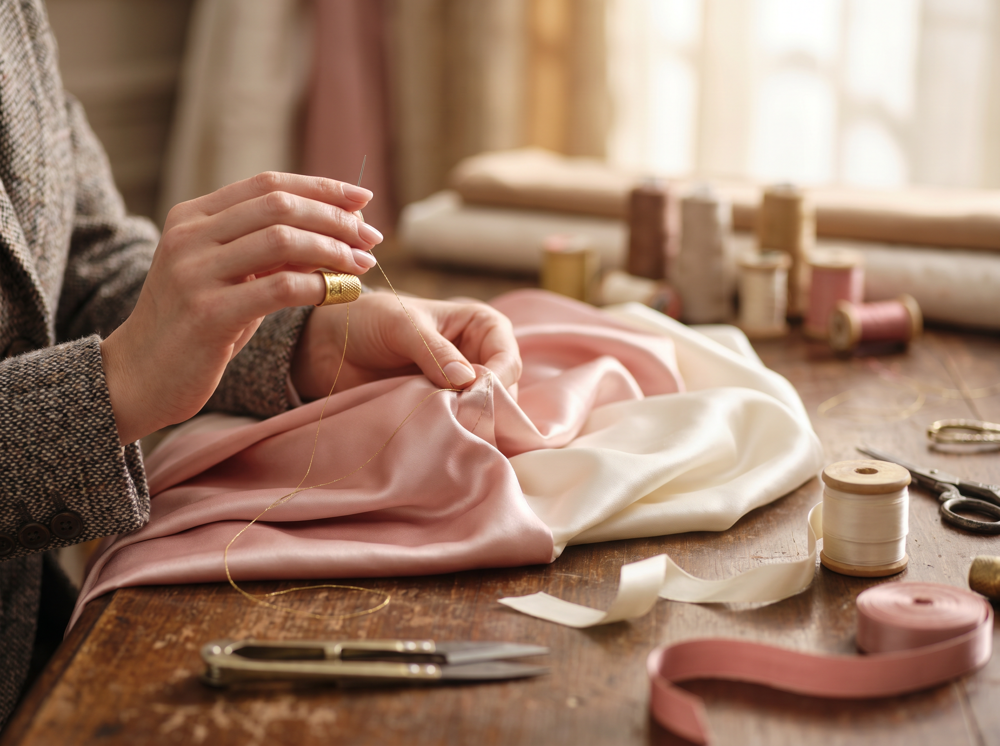
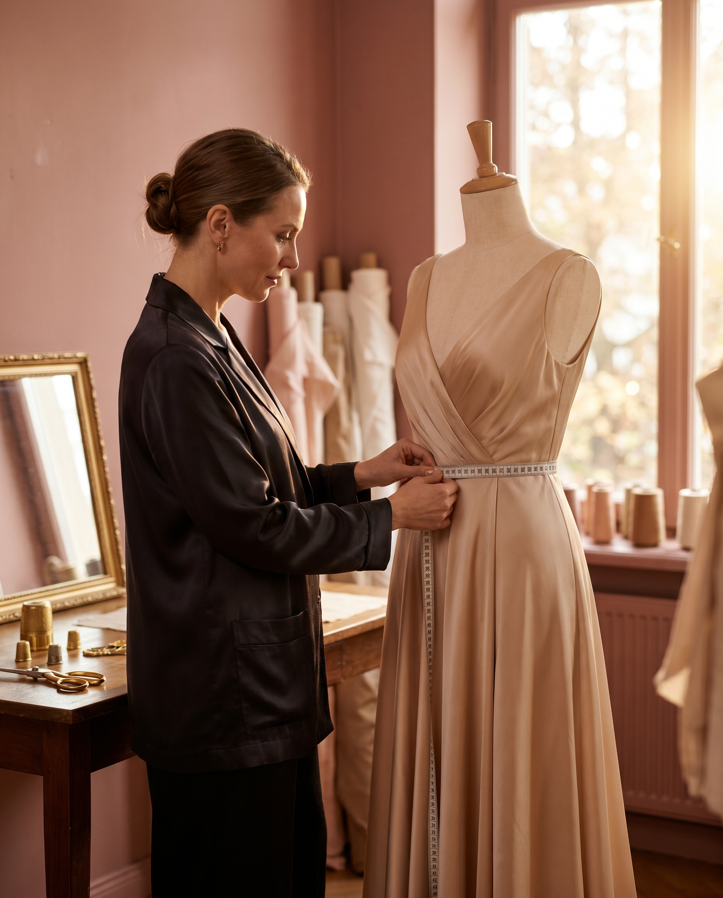
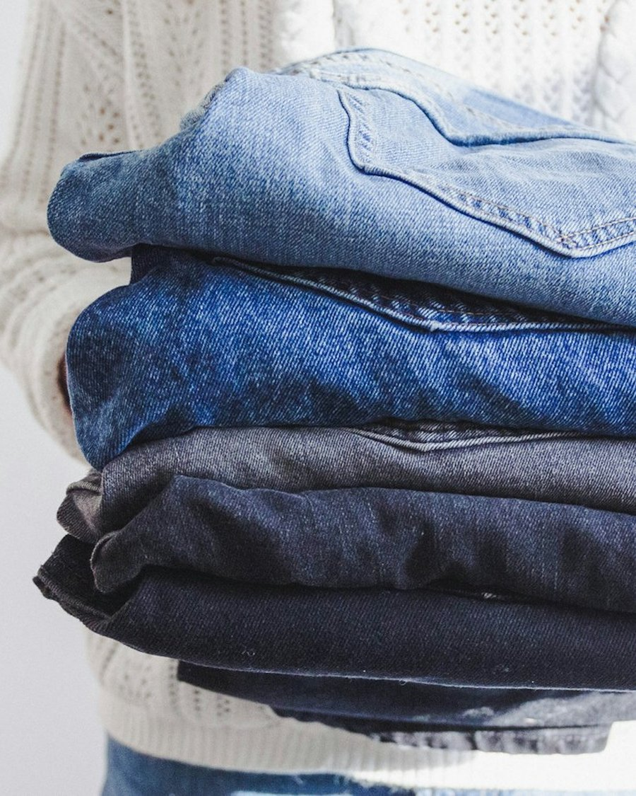
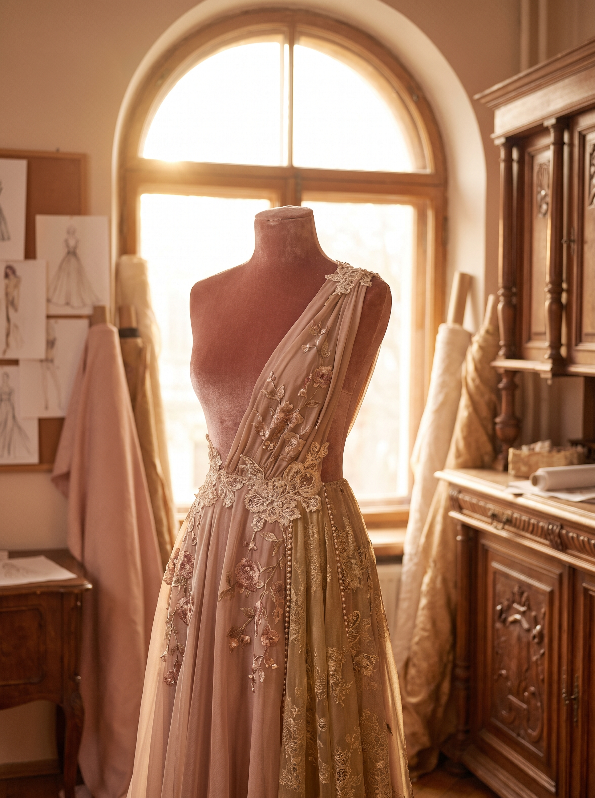

Čtyři služby,
jeden cíl: nový život
Každý kousek, který k nám přijde, posoudíme individuálně. Nejprve zkusíme opravit, pak přešít, a teprve nakonec ušít nový. Aby váš kousek zase žil.
Každý kousek, který k nám přijde, posoudíme individuálně. Nejprve zkusíme opravit, pak přešít, a teprve nakonec ušít nový. Aby váš kousek zase žil.

Trhliny, díry, rozbité zipy, utržené knoflíky, prasklé švy, poškozené podšívky. Vrátíme vašemu oblíbenému kousku plný komfort, funkčnost i důstojnost. Mnohé z toho, co jinde označí za neopravitelné, my zachráníme.

Máte krásný kus oblečení, ale nesedí vám tak, jak by měl? Přešijeme velikost, zúžíme pas, zkrátíme nohavice, upravíme ramena. Vdechneme vašim šatům nový život — přesně podle vaší postavy.

Milujeme denim. Ne jako rychlou módu, ale jako materiál, který stárne do krásy — pokud se o něj správně pečuje. Opravujeme, restaurujeme a vylepšujeme džíny, které si chcete nechat na roky.

Některé kousky zachránit nelze — a to je v pořádku. Tehdy přichází na řadu šití na míru. Vytvoříme oděv od úplného základu, přesně podle vaší postavy, vkusu i příležitosti.
Napište nám na WhatsApp, pošlete fotografii e-mailem, nebo se zastavte osobně. Rádi posoudíme, co váš kousek potřebuje.
Napsat nám